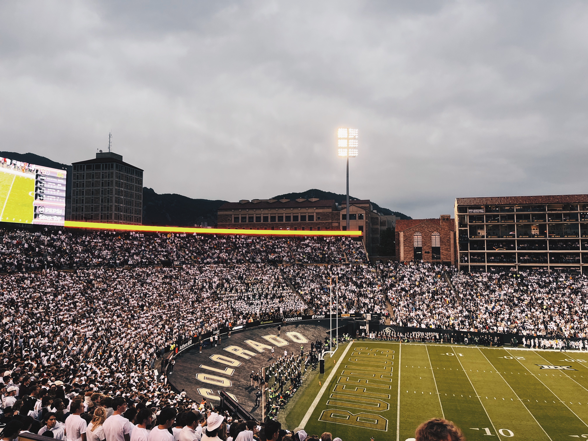
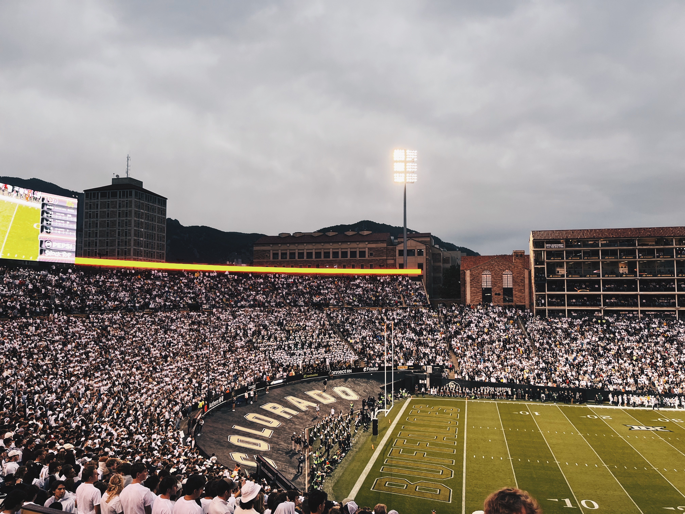
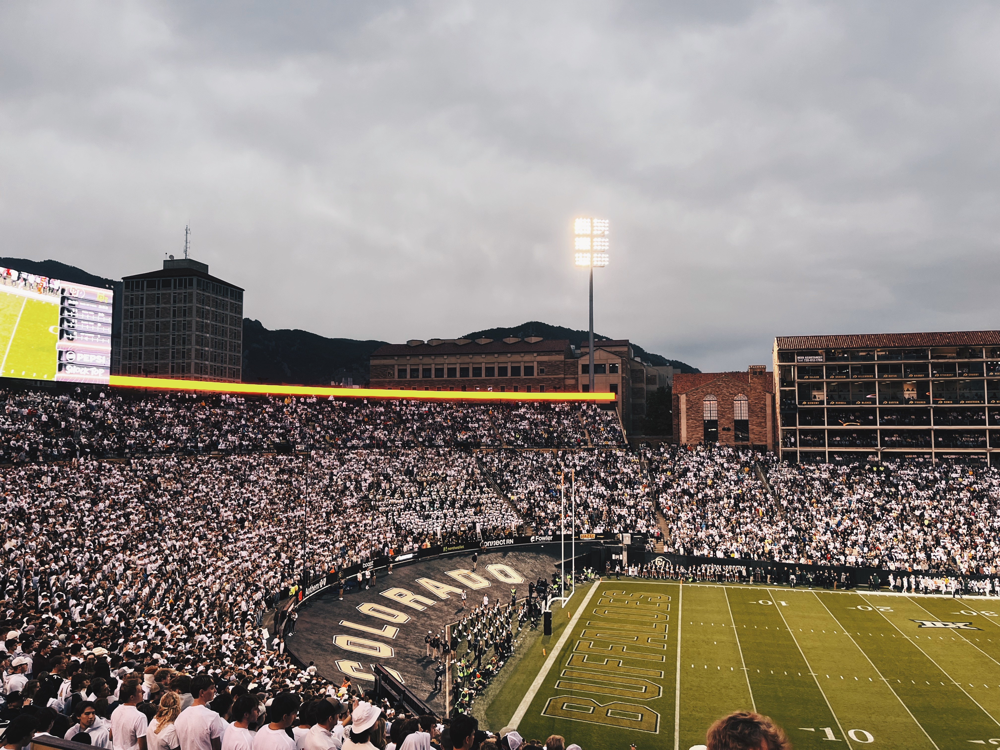
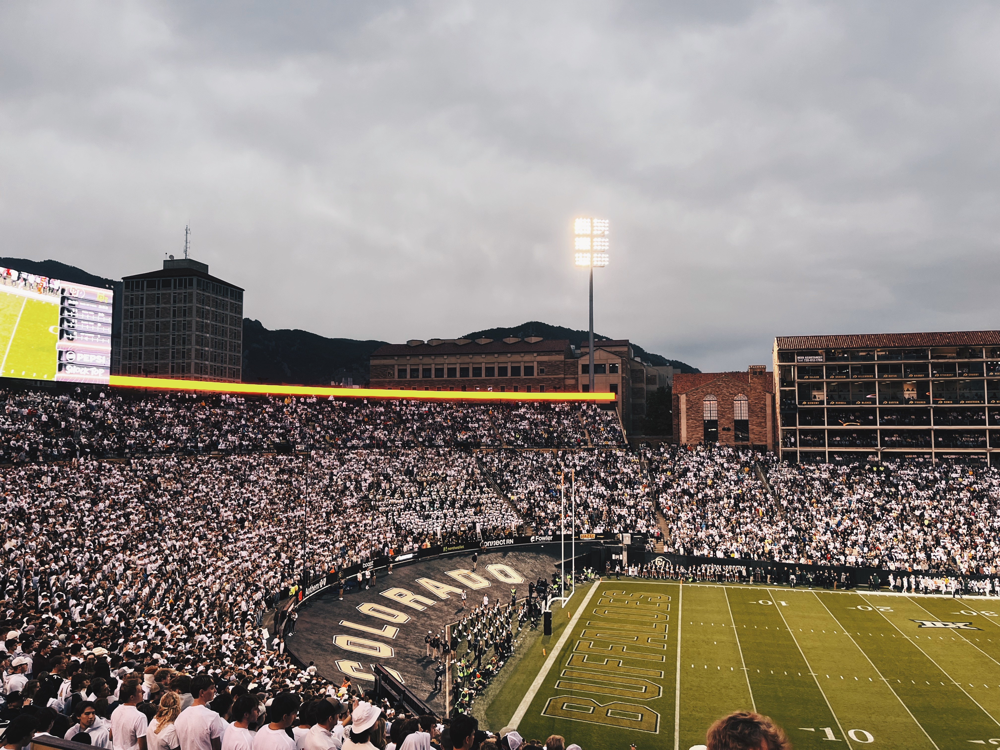

 


GRADUATE STUDENT AT NEW YORK UNIVERSITY
Gina Dea studies Moving Image Archiving and Preservation at New York University’s Tisch School of the Arts. She earned a Bachelor of Arts in Cinema Studies from the University of Colorado Boulder, where she wrote an honors thesis titled We Shall Overcome: Women in the American Workforce, On- and Off-Screen (1960-1989), graduating summa cum laude. With a foundation in film history and theory and current archival training, her scholarly interests include gender dynamics—with a particular focus on women’s roles on-screen and behind the camera—American cinema of the 1960s and 1970s, approaching film as both art and object, and exploring the emotional weight and beauty of images inseparable from their physical deterioration. She is currently developing a research project on actress, director, and centenarian Lee Grant.